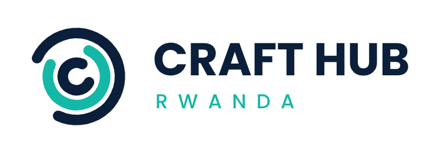

Company Profile · 2026
We design, build, and implement software systems, applications, databases, and web platforms that solve practical operational problems.
Who we are
CRAFT HUB RWANDA is a professional software development company based in Rwanda. We work with institutions and businesses to deliver custom digital solutions—not only education technology, but also tailored systems, integrations, and products built for real-world use.
A trusted Rwandan software company known for dependable digital solutions that improve how organizations operate and serve their communities.
Understand operational challenges, design clear software solutions, and deliver quality systems that simplify work and strengthen transparency.
Core services
Values
Innovation · Reliability · Quality · Simplicity · Practical problem-solving · Customer focus
Featured product
In active development
e-KOFI is an education technology product we are building to replace cash-based school canteen payments with digital student wallets—improving convenience, traceability, and oversight for parents, students, schools, and canteen operators.
Intended flow: Parent tops up wallet → student purchases at canteen → fingerprint verification → digital transaction record.
e-KOFI capabilities above reflect product vision and current development. They are not a claim of full commercial deployment until formally launched with a partner institution.
Why Craft Hub Rwanda
Our approach
Discover the problem → design for daily use → build and test iteratively → implement and improve with stakeholders.
Leadership
Founder & Chief Executive Officer
Leads company direction, product strategy, client engagement, and delivery standards for CRAFT HUB RWANDA.
CRAFT HUB RWANDA
1 KN 78 St, Kiyovu, Nyarugenge
Kigali, Rwanda
Tel: +250 792 431 896
Email: keanneishimwe@gmail.com
Private Company Limited by Shares
Rwanda Development Board (RDB), Office of the Registrar General
Registration date: 18 October 2026
Primary activity: Designing, developing, and implementing software systems, applications, databases, and web
pages.
This profile introduces CRAFT HUB RWANDA for business discussions. It is not a contractual offer. Product scope depends on development progress and agreements with each partner.